1. 이해
LLM, 프롬프트, 컨텍스트, 환각, 검증의 기본 개념을 잡는다.
ChatGPT부터 Codex까지
이 강의안은 LLM의 기본 원리에서 출발해 ChatGPT의 수업·연구 활용, Skill과 Workspace Agent, 그리고 Codex를 이용한 실제 파일 생성과 검증까지 이어지는 실습형 자료이다.
From ChatGPT to Codex
This lecture guide starts with basic LLM concepts, then moves through ChatGPT use for teaching and research, Skills and Workspace Agents, and finally Codex workflows for creating and verifying real files.
이 강의안은 도구 기능을 나열하는 방식이 아니라, 대학원 수업과 연구에서 LLM을 실제로 활용하는 순서에 맞춰 구성되어 있다. 먼저 LLM이 답변을 만드는 원리를 이해하고, ChatGPT로 자료를 읽고 생각을 정리하는 방법을 익힌 뒤, Skill과 Agent로 반복 업무를 표준화하고, 마지막으로 Codex로 파일 생성·코드 실행·검증까지 수행하는 흐름이다.
LLM, 프롬프트, 컨텍스트, 환각, 검증의 기본 개념을 잡는다.
ChatGPT 메뉴, 프로젝트, 학습모드, Tasks, 이미지 기능을 수업과 연구에 연결한다.
Skill과 Workspace Agent로 반복 업무와 팀 협업을 구조화한다.
Codex로 공공데이터 수집, 엑셀 생성, 코드 수정, 검증까지 진행한다.
Part 1
LLM은 Large Language Model, 즉 대규모 언어 모델이다. 방대한 텍스트와 코드 패턴을 학습해 사용자의 입력 다음에 어떤 말이 이어질 가능성이 높은지 예측하고, 그 예측을 반복해 문장과 답변을 만든다.
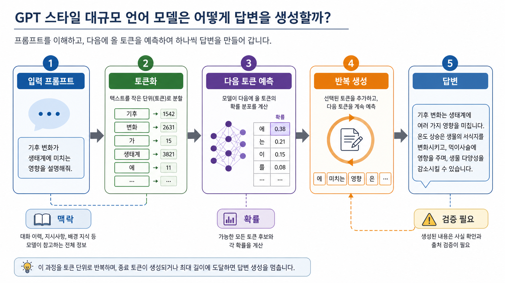
모델이 글을 처리하는 작은 단위이다. 한글의 한 글자, 단어 조각, 영어 단어 일부처럼 나뉠 수 있다. 모델은 문장을 그대로 보는 것이 아니라 토큰의 흐름으로 본다.
사용자가 모델에게 주는 지시와 맥락이다. 같은 질문이라도 목표, 역할, 자료, 형식, 검증 조건을 어떻게 주느냐에 따라 답변 품질이 달라진다.
모델이 한 번에 참고할 수 있는 대화, 파일, 명령 결과, 문서 내용의 범위이다. 중요한 자료가 컨텍스트에 없으면 모델은 정확히 알 수 없다.
학습을 통해 조정된 내부 숫자이다. 사람이 직접 규칙을 모두 입력한 것이 아니라, 많은 예시에서 언어와 코드의 패턴을 숫자 관계로 익힌 것이다.
단어나 문장의 의미를 숫자 벡터로 표현한 것이다. 비슷한 의미의 문장이나 문서를 찾는 검색, 추천, 문서 질의응답에 자주 활용된다.
모델이 그럴듯하지만 사실과 다른 답을 만드는 현상이다. LLM은 기본적으로 “사실 데이터베이스”라기보다 “가능성 높은 답변 생성기”이기 때문에 검증이 필요하다.
| 용어 | 뜻 | 업무 활용 포인트 |
|---|---|---|
| 모델 | 답변을 생성하는 AI 엔진이다. | 어려운 분석은 더 강한 모델과 높은 추론 옵션을 쓴다. |
| 컨텍스트 창 | 모델이 한 번에 참고할 수 있는 정보량이다. | 긴 문서는 핵심 부분을 지정하거나 요약 단계를 나누는 것이 좋다. |
| 프롬프트 엔지니어링 | 목표, 자료, 제약, 형식을 명확히 주는 요청 작성법이다. | 공문, 보고서, 엑셀 자동화는 산출물 형식을 구체적으로 적어야 한다. |
| RAG | 검색으로 찾은 문서를 모델 답변에 함께 넣는 방식이다. | 내부 지침, 조례, 매뉴얼을 근거로 답변하게 할 때 유용하다. |
| 에이전트 | 모델이 도구를 사용해 여러 단계를 수행하는 작업 방식이다. | Codex는 파일 수정, 명령 실행, 검증까지 수행하는 에이전트이다. |
| 검증 | AI 답변이 실제로 맞는지 확인하는 절차이다. | 통계 원자료 대조, 법령 원문 확인, 엑셀 수식 검산을 요청해야 한다. |
역할: 당신은 공공데이터 분석을 돕는 실무 보조자이다.
목표: KOSIS 자료를 내려받아 엑셀과 그래프를 만들라.
자료: API 키는 지정된 txt 파일에서 읽고, 통계표 ID는 최신 메타데이터로 확인하라.
제약: 개인정보는 포함하지 말고, 원자료와 정리표를 분리하라.
검증: 생성된 엑셀 파일 존재 여부, 시트명, 차트 개수, 데이터 기간을 확인하라.
출력: 바뀐 파일, 실행 명령, 검증 결과를 짧게 요약하라.AI를 잘 쓰려면 매번 같은 설명을 반복하지 않도록 개인맞춤 설정을 해 두는 것이 좋다. ChatGPT에서는 응답 방식과 기억할 정보를 설정하고, Codex에서는 작업 규칙과 프로젝트별 지침을 파일로 남겨 반복 업무의 품질을 안정화할 수 있다.
| 구분 | 어디에서 설정하는가 | 무엇을 넣으면 좋은가 |
|---|---|---|
| ChatGPT Custom Instructions | 설정 → Personalization → Custom Instructions | 내 역할, 관심 분야, 선호 문체, 답변 형식, 자주 쓰는 단위와 기준 |
| ChatGPT Memory | 설정 → Personalization → Memory | 반복해서 기억하면 좋은 선호와 배경 정보. 민감 정보는 넣지 않는 것이 좋다. |
| Codex 전역 지침 | ~/.codex/AGENTS.md |
모든 프로젝트에서 적용할 개인 작업 방식, 보고 형식, 검증 습관 |
| Codex 프로젝트 지침 | 저장소 루트나 하위 폴더의 AGENTS.md |
프로젝트 구조, 실행 명령, 테스트 방법, 수정 금지 영역, 배포 절차 |
| Codex 설정 파일 | ~/.codex/config.toml 또는 .codex/config.toml |
기본 모델, 추론 강도, 승인 정책, 샌드박스, 기능 플래그, MCP 연결 |
내 정보:
나는 행정학과 공공데이터 분석을 가르치는 연구자이다.
수업 자료, 정책 보고서, 공공데이터 분석 예제를 자주 만든다.
응답 방식:
한국어 문어체로 답변하라.
핵심 개념은 먼저 정의하고, 그다음 실무 예시를 제시하라.
표가 이해에 도움이 되면 표를 사용하라.
불확실한 정보는 단정하지 말고 확인이 필요하다고 표시하라.
개인정보나 민감 정보가 들어갈 수 있는 작업은 비식별화 주의점을 먼저 말하라.앞으로 기억해 주세요.
나는 강의안을 만들 때 "~습니다"보다 문어체 "~이다" 형식을 선호한다.
공공데이터 예시는 가능하면 KOSIS, 공공데이터포털, 열린재정 같은 국내 공공데이터를 사용한다.
코드 예시는 Windows PowerShell 환경과 Python 실행을 함께 고려해 설명한다.AGENTS.md 예시# AGENTS.md
## 작업 원칙
- 기존 파일 구조와 디자인을 먼저 읽고 그 흐름에 맞춰 수정한다.
- API 키, 토큰, 개인정보 파일은 절대 커밋하거나 배포하지 않는다.
- 강의안 문체는 한국어 문어체를 사용하고, 중요한 용어는 굵게 표시한다.
## 검증
- HTML을 수정하면 주요 제목과 이미지 경로가 실제 파일에 존재하는지 확인한다.
- 엑셀 예제를 수정하면 파일 생성 여부, 시트명, 차트 범위와 축 표시를 확인한다.
- 배포 전 변경 파일 목록과 민감 파일 포함 여부를 점검한다.
## 보고 방식
- 최종 답변에는 바뀐 파일, 검증 결과, 남은 주의점을 짧게 정리한다.config.toml 예시# ~/.codex/config.toml
model = "gpt-5.4"
model_reasoning_effort = "medium"
approval_policy = "on-request"
sandbox_mode = "workspace-write"
[features]
goals = true
memories = trueAGENTS.md, config.toml 어디에도 넣지 않는 것이 원칙이다.
프로젝트는 하나의 주제나 업무를 중심으로 대화, 파일, 지침, 관련 결과물을 묶어 두는 작업 공간이다. 일반 대화가 한 번의 질문과 답변을 중심으로 움직인다면, 프로젝트는 여러 날 또는 여러 단계에 걸친 작업의 맥락을 보존하는 데 적합하다.
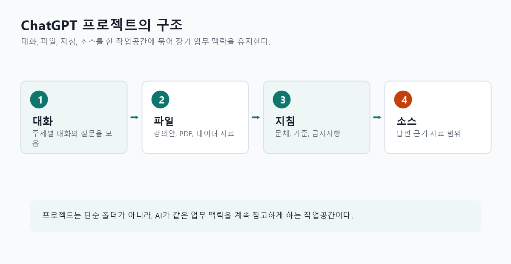
강의안 작성, 논문 검토, 정책 보고서 작성, 데이터 분석, 행정업무 매뉴얼 제작처럼 같은 주제로 여러 번 대화하고 자료를 계속 참조해야 할 때 유용하다.
일반 대화는 독립적인 질의응답에 가깝다. 프로젝트는 관련 대화와 파일을 한곳에 모아 지속적인 맥락을 만들고, 프로젝트 전용 지침을 적용할 수 있다.
프로젝트에는 해당 작업에서만 적용할 지침을 넣을 수 있다. 예를 들어 강의안 프로젝트라면 문체, 대상 학습자, 예시의 수준, 피해야 할 표현, 참고할 자료 기준을 지정할 수 있다. 이렇게 하면 매 대화마다 같은 조건을 반복하지 않아도 된다.
이 프로젝트는 행정학 대학원생을 위한 AI 활용 강의안 작성용이다.
문체는 한국어 문어체로 작성한다.
중요한 개념은 굵게 표시하고, 실무 예시를 함께 제시한다.
공공데이터 예시는 가능하면 KOSIS, 공공데이터포털, 정부24, 열린재정 자료를 우선 사용한다.
개인정보, API 키, 내부 비공개 자료는 결과물에 포함하지 않는다.프로젝트 프롬프트에서 보이는 소스는 ChatGPT가 답변을 만들 때 어떤 자료를 근거로 삼을지 정하는 기능으로 이해하면 된다. 프로젝트 지침이 “어떤 방식으로 답할 것인가”를 정한다면, 소스는 “무엇을 보고 답할 것인가”를 정한다. 예를 들어 프로젝트에 올려 둔 강의안, 논문 PDF, 회의록, 데이터 설명서, 이전 대화가 소스가 될 수 있다.
| 구분 | 역할 | 예시 |
|---|---|---|
| 프로젝트 지침 | 답변 방식, 문체, 기준, 금지사항을 정함 | “문어체로 작성”, “행정학 대학원생 수준으로 설명”, “민감 정보 제외” |
| 소스 | 답변이 참조할 자료와 근거 범위를 정함 | 업로드한 PDF, 강의 노트, 데이터 파일, 프로젝트 안의 이전 대화 |
| 메모리 | 사용자의 장기 선호나 반복 맥락을 반영함 | 선호 문체, 자주 쓰는 분석 방식, 반복 업무 배경 |
소스 기능을 사용할 때는 프롬프트 안에서 참조 범위를 명시하면 결과가 더 안정적이다. 예를 들어 “프로젝트 소스에 있는 강의안 파일만 근거로 요약하라”, “업로드한 논문 PDF와 이전 토론 내용을 비교해 쟁점을 정리하라”, “소스에 근거가 없는 내용은 추정하지 말고 확인 필요라고 표시하라”처럼 요청할 수 있다.
프로젝트 소스에 포함된 강의안과 회의 메모만 근거로 사용하라.
외부 지식으로 보완한 내용은 별도의 “추가 확인 필요” 항목에 분리하라.
소스에서 확인되는 내용과 추론한 내용을 구분해 표로 정리하라.프로젝트를 사용할 때는 ChatGPT가 기억을 어떻게 참조할지 확인하는 것이 중요하다. 보통은 일반 메모리와 함께 사용하거나, 프로젝트 안의 대화와 지침만 참조하도록 프로젝트 전용 메모리에 가깝게 설정하는 방식으로 나누어 생각할 수 있다. 실제 메뉴명은 계정과 화면 버전에 따라 달라질 수 있으므로, 프로젝트의 설정 또는 더보기 메뉴에서 메모리 옵션을 확인한다.
| 선택 방식 | 적합한 경우 | 주의점 |
|---|---|---|
| 일반 메모리와 함께 사용 | 평소 선호 문체, 직무 배경, 자주 쓰는 형식이 프로젝트에도 도움이 될 때 | 다른 대화에서 형성된 선호가 프로젝트 답변에 영향을 줄 수 있음 |
| 프로젝트 전용 메모리 | 특정 수업, 연구, 용역, 내부 검토처럼 다른 업무와 맥락을 분리해야 할 때 | 프로젝트 밖의 개인 선호나 이전 대화 맥락은 덜 반영될 수 있음 |
| 임시 대화 또는 메모리 비활성 | 민감한 자료를 다루거나 흔적을 최소화해야 할 때 | 이전 맥락을 활용한 개인화 효과는 줄어듦 |
프로젝트를 동료와 공유하면 같은 목표, 자료, 지침을 중심으로 함께 작업할 수 있다. 강의자료 제작팀, 연구 보조원, 정책보고서 작성팀처럼 역할을 나누어 작업하는 경우에 효과적이다. 공유 전에는 프로젝트 안의 파일, 대화 내용, 지침에 민감 정보가 들어 있는지 반드시 확인해야 한다.
학생 개인정보, 미공개 연구자료, API 키, 내부 문서, 외부 배포가 제한된 자료가 들어 있지 않은지 확인한다.
역할 분담, 파일명 규칙, 최종 검토자, 문체 기준, 출처 표기 원칙을 프로젝트 지침에 적어 둔다.
중요한 변경은 대화에 남기고, 최종 산출물은 별도 문서나 저장소에 보관해 버전 혼선을 줄인다.
Part 2
완벽한 프롬프트가 필요하지는 않다. 다만 큰 작업일수록 목표, 맥락, 제약, 완료 조건을 넣어야 Codex가 덜 헤매고 결과도 검토하기 쉬워진다.
무엇을 만들거나 고쳐야 하는지 한 문장으로 적는다.
관련 파일, 오류 메시지, 기대 동작, 사용 환경을 알려준다.
수정하지 말아야 할 파일, 디자인 규칙, 라이브러리 제한을 적는다.
테스트 통과, 화면 확인, 특정 파일 생성처럼 끝났음을 판단할 기준을 준다.
복잡한 일은 “먼저 계획을 세우고, 승인 후 구현하라”라고 요청하면 좋다.
“관련 테스트를 실행하고 결과를 알려 달라”를 붙이면 작업의 신뢰도가 높아진다.
예시:
이 프로젝트의 index.html을 더 읽기 쉽게 개선하라.
기존 파일 구조는 유지하고, CSS는 같은 파일 안에서만 수정하라.
완료 후 변경 내용과 확인 방법을 짧게 알려 달라.프롬프트는 AI에게 일을 시키는 업무 지시서에 가깝다. 좋은 프롬프트는 멋진 문장보다 목표가 분명하고, 필요한 자료가 붙어 있으며, 검증 기준이 명확한 요청이다.
“검토하라”, “요약하라”, “수정하라”, “엑셀로 만들라”, “차트까지 생성하라”처럼 원하는 행동을 앞에 둔다. 막연한 질문보다 실행 가능한 지시가 결과를 좋게 만든다.
파일 위치, 사용 목적, 대상 독자, 현재 문제, 기대 결과를 알려준다. 같은 “보고서 작성”이라도 장관 보고용인지 내부 검토용인지에 따라 문체와 구조가 달라진다.
표, 목록, HTML, 엑셀, Python 스크립트, 공문 초안처럼 결과 형식을 정한다. “엑셀 파일에는 원자료, 정리표, 차트 시트를 분리하라”처럼 구조를 구체화하면 더 좋다.
수정 금지 파일, 개인정보 사용 금지, 외부 패키지 추가 금지, 기존 디자인 유지처럼 제약을 명시한다. 제약은 Codex가 안전한 선택을 하게 만드는 울타리이다.
“파일이 실제로 생성됐는지 확인하라”, “테스트를 실행하라”, “엑셀 차트 개수를 확인하라”처럼 검증을 포함한다. AI 답변은 설명보다 확인된 결과가 중요하다.
처음부터 모든 일을 한 번에 맡기기보다 “먼저 계획을 제시하라”, “그다음 구현하라”, “마지막으로 검증하라”처럼 나누면 오류를 줄일 수 있다.
원하는 답이 나오지 않았을 때는 바로 다시 시키기보다, 왜 답이 빗나갔는지와 다음에는 어떤 프롬프트를 써야 하는지를 물어본다. 모델이 요구사항의 빈칸, 모호한 표현, 빠진 자료, 잘못된 완료 조건을 짚어 주는 경우가 많다.
목표: KOSIS에서 최근 10년 월별 소비자물가지수 자료를 내려받아 엑셀 파일을 만들라.
맥락: 강의 실습용 예제이며, 수강자가 스크립트를 다시 실행할 수 있어야 한다.
제약: API 키는 kosis_api_key.txt에서 읽고, 코드 안에 직접 쓰지 말라.
산출물: 원자료 시트, 정리된 추세 시트, 날짜가 표시된 선그래프를 포함한 xlsx 파일.
검증: 파일 생성 여부, 시트명, 데이터 기간, 차트의 수평축 날짜 표시 여부를 확인하라.
보고: 바뀐 파일과 실행 결과를 짧게 요약하라.방금 답변은 내가 원한 결과와 다르다.
1. 내 원래 요청에서 어떤 부분이 모호했는지 분석하라.
2. 네가 어떤 가정을 했기 때문에 답이 빗나갔는지 설명하라.
3. 내가 원하는 답을 얻으려면 어떤 정보를 추가해야 하는지 목록으로 제시하라.
4. 같은 일을 다시 요청할 때 사용할 수 있는 더 좋은 프롬프트를 작성하라.
5. 수정된 프롬프트에는 목표, 맥락, 제약, 산출물 형식, 검증 기준을 포함하라.아래 예시는 학생들이 ChatGPT에 직접 입력해 볼 수 있는 프롬프트이다. 이 실습의 목적은 ChatGPT에게 단순히 아이디어를 묻는 것이 아니라, 역할, 기간, 가치 기준, 복잡도, 출력 항목을 함께 제시하면 더 실용적인 답을 얻을 수 있다는 점을 확인하는 데 있다.
나는 [서울대학교]의 행정학과 교수입니다.
앞으로 2주 안에 바로 시도할 수 있고,
학업에 높은 가치를 주면서도 복잡도는 낮은 ChatGPT 활용 사례를 제안해 주세요.
각 활용 사례에는 다음 내용을 포함해 주세요.
1. 활용 시점:
“수업 준비를 할 때…”, “논문 검토를 할 때…”와 같이 작성
2. 복사해서 바로 사용할 수 있는 예시 프롬프트
3. 출력 형식:
불릿, 표, 수업 계획, 연구 프로젝트 개요 등
4. 기대 효과:
시간 절약, 이해도 향상, 결과물 품질 향상, 오류 및 누락 감소ChatGPT가 제안한 활용 사례가 실제로 2주 안에 시도 가능한지, 복잡도가 낮은지, 행정학 수업과 연구 맥락에 맞는지 확인한다.
“역할과 조건을 뺀 짧은 질문”으로 다시 물어본 결과와 비교한다. 조건이 들어간 프롬프트가 더 구체적인 답을 만드는지 살펴본다.
학습모드(Study Mode)는 ChatGPT가 정답을 바로 제시하기보다 질문, 힌트, 단계별 설명, 확인 문제를 통해 사용자가 스스로 이해하도록 돕는 방식이다. 일반 대화가 “답을 얻는 도구”에 가깝다면, 학습모드는 “이해 과정을 설계하는 튜터”에 가깝다. 실제 메뉴 위치와 명칭은 계정과 화면 버전에 따라 달라질 수 있으므로, ChatGPT의 도구 선택 메뉴나 학습 관련 옵션에서 확인한다.
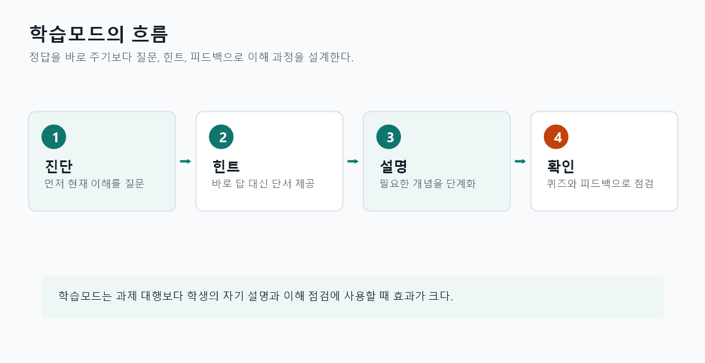
일반 답변은 요약, 정답, 초안 생성에 빠르다. 학습모드는 사용자의 현재 이해 수준을 확인하고, 작은 질문을 던지며, 틀린 부분을 설명하고, 다음 단계로 넘어가게 한다.
학생이 단순히 과제를 대신 작성하게 하기보다, 개념 이해, 논리 전개, 자료 해석, 코드 이해, 시험 준비를 스스로 연습하도록 만들 수 있다.
| 활용 상황 | 학습모드 요청 방식 | 기대 효과 |
|---|---|---|
| 개념 이해 | “행정책임성 개념을 바로 설명하지 말고, 먼저 내 이해를 질문으로 확인한 뒤 단계적으로 설명하라.” | 수동적 암기보다 개념 구조를 스스로 점검 |
| 논문 읽기 | “이 논문의 연구질문, 이론, 방법, 한계를 내가 찾을 수 있도록 질문을 순서대로 제시하라.” | 논문 요약 능력과 비판적 읽기 능력 향상 |
| 통계·코드 학습 | “회귀분석 결과표를 바로 해석하지 말고, 계수·표준오차·유의확률을 하나씩 묻고 피드백하라.” | 결과표 해석 실수 감소 |
| 시험 준비 | “내가 답을 말하면 채점 기준에 따라 피드백하고, 부족한 부분만 다시 연습문제로 내라.” | 반복 학습과 약점 보완 |
@공부하기로 학습모드 시작하기ChatGPT 입력창에서 @공부하기를 입력한 뒤 학습 관련 항목을 선택하면 학습모드 방식으로 대화를 시작할 수 있다. 계정, 앱 버전, 언어 설정에 따라 표시명이 @공부하기, Study Mode, 또는 비슷한 이름으로 다를 수 있으므로, 입력창에서 @를 누른 뒤 목록에 나타나는 학습 관련 항목을 선택한다.
@공부하기
정책평가에서 내적 타당성과 외적 타당성의 차이를 공부하고 싶다.
정답을 바로 설명하지 말고, 먼저 내가 알고 있는 내용을 질문으로 확인한 뒤 단계별로 설명하라.학습모드처럼 행동하라.
주제는 “정책평가에서 내적 타당성과 외적 타당성의 차이”이다.
정답을 바로 설명하지 말고, 먼저 내가 알고 있는 내용을 2개의 질문으로 확인하라.
내 답변을 보고 틀린 부분은 힌트로 고치게 하라.
마지막에는 5문항의 짧은 확인 퀴즈를 내고, 내가 답한 뒤 채점하라.Tasks는 ChatGPT에게 특정 시점이나 반복 주기에 맞춰 알림, 점검, 요약, 준비 작업을 하도록 맡기는 기능이다. 일반 대화가 사용자가 질문할 때만 반응하는 방식이라면, Tasks는 사용자가 미리 정한 조건에 따라 ChatGPT가 다시 알려 주거나 반복 업무를 챙기는 방식에 가깝다. 실제 제공 범위와 메뉴 위치는 계정, 요금제, 앱 버전에 따라 달라질 수 있다.
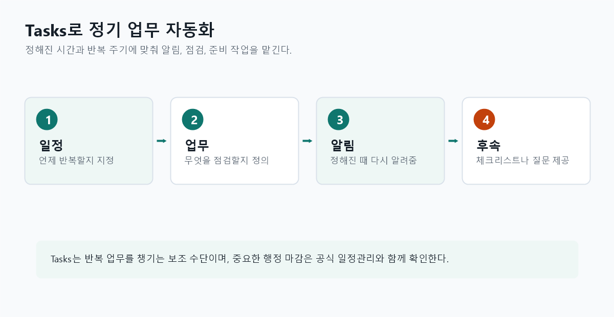
회의 전 준비 알림, 매주 자료 점검, 정기 보고서 초안 작성, 수업 전 확인 목록, 논문 작성 진도 점검, 주요 정책 이슈 모니터링처럼 반복성이 있는 업무에 적합하다.
Tasks는 주로 언제 무엇을 다시 알려 줄지 정하는 기능이고, Codex는 파일을 직접 수정하고 명령을 실행하는 작업 에이전트이다. 반복 알림은 Tasks, 실제 파일 생성·검증 자동화는 Codex가 더 적합하다.
| 업무 유형 | Tasks 예시 요청 | 활용 효과 |
|---|---|---|
| 정기 회의 준비 | “매주 월요일 오전 9시에 이번 주 정책자료 회의 준비 체크리스트를 알려줘.” | 회의 준비 누락 감소 |
| 수업 준비 | “매주 수요일 오후 3시에 다음 주 강의안 점검 항목을 알려줘.” | 강의자료 수정 일정 관리 |
| 논문 작성 | “매주 금요일 오후 5시에 이번 주 논문 작성 진도를 점검할 질문 5개를 보내줘.” | 장기 과제의 진행 상황 관리 |
| 정책 이슈 점검 | “매일 오전 8시에 지방재정 관련 주요 이슈를 확인하라고 알려줘.” | 반복 모니터링 습관 형성 |
매주 월요일 오전 9시에 다음 내용을 알려줘.
이번 주 행정학 수업 준비를 위해 확인할 사항을 체크리스트로 정리하라.
체크리스트에는 강의안 수정, 읽기자료 확인, 실습 데이터 준비, 학생 질문 예상, 수업 후 과제 공지를 포함하라.매주 금요일 오후 4시에 나에게 논문 작성 진도 점검을 해줘.
이번 주에 작성한 부분, 막힌 부분, 다음 주에 끝낼 부분을 묻는 질문 5개를 제시하라.
마지막에는 다음 주 작업을 3개 이하의 실행 항목으로 정리하도록 유도하라.이미지 기능은 텍스트 설명을 바탕으로 그림을 만들거나, 사용자가 올린 이미지를 분석·수정·변형하는 기능이다. 강의에서는 어려운 개념을 시각화하고, 행사용 포스터와 강의 표지처럼 반복적으로 필요한 시각 자료를 빠르게 만드는 데 활용할 수 있다.
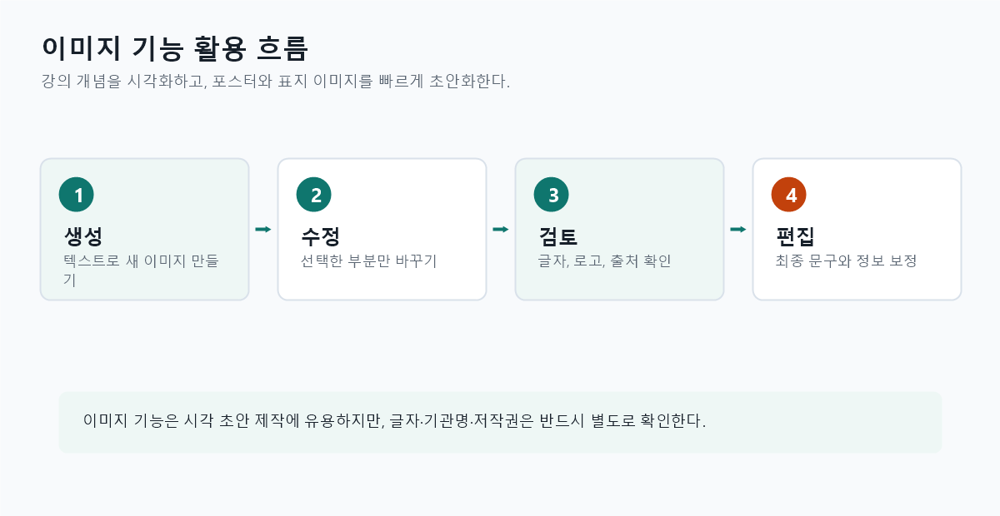
마인드 맵, 개념도, 비교 도식, 절차 흐름도, 정책과정 그림처럼 텍스트로만 설명하기 어려운 내용을 한눈에 보이게 만들 수 있다.
강의 포스터, 세미나 안내 이미지, 보고서 표지, 발표 첫 장 배경, 카드뉴스 초안처럼 디자인 초안을 빠르게 만들 수 있다.
| 활용 유형 | 프롬프트 예시 | 확인할 점 |
|---|---|---|
| 마인드 맵 | “행정학에서 정책과정론을 설명하는 마인드 맵을 만들어라. 의제설정, 정책결정, 집행, 평가, 환류를 중심 노드와 하위 노드로 표현하라.” | 글자가 틀릴 수 있으므로 최종 텍스트는 직접 확인 |
| 강의 포스터 | “대학원생 대상 ‘공공데이터와 AI 활용’ 특강 포스터를 만들어라. 전문적이고 차분한 분위기, 한국 대학 강의 느낌, 제목이 잘 보이게 구성하라.” | 날짜, 장소, 기관명은 별도 편집 도구에서 정확히 입력 |
| 보고서 표지 | “지방재정 데이터 분석 보고서의 표지 이미지를 만들어라. 과도한 장식 없이 행정자료, 지도, 그래프 이미지를 은은하게 결합하라.” | 공식 로고나 기관 상징은 권한과 사용 기준 확인 |
| 개념 비교 도식 | “내적 타당성과 외적 타당성의 차이를 설명하는 2열 비교 인포그래픽을 만들어라. 왼쪽은 연구 설계 내부의 인과추론, 오른쪽은 다른 사례로 일반화 가능성을 표현하라.” | 개념 관계가 왜곡되지 않았는지 교수자가 검토 |
정책과정론을 설명하는 강의용 마인드 맵 이미지를 만들어라.
중앙에는 “정책과정”을 두고, 주변에는 의제설정, 정책형성, 정책결정, 정책집행, 정책평가, 정책환류를 배치하라.
대학 강의 슬라이드에 넣을 수 있도록 차분하고 읽기 쉬운 스타일로 만들어라.
텍스트는 최소화하고, 각 단계의 관계가 화살표로 보이게 하라.“공공데이터와 AI 활용”이라는 제목의 특강 포스터 이미지를 만들어라.
대상은 행정학 대학원생이다.
분위기는 전문적이고 현대적이며, 데이터 시각화와 행정 문서 이미지를 은은하게 결합하라.
상단에는 큰 제목이 들어갈 공간, 하단에는 일시와 장소를 넣을 빈 공간을 남겨라.“지방재정 데이터 분석 보고서” 표지 이미지를 만들어라.
지도, 예산 문서, 선그래프, 막대그래프를 절제된 방식으로 결합하라.
색상은 흰색 배경, 짙은 녹색, 회색, 검정 중심으로 사용하라.
표지 제목과 저자명은 나중에 편집할 수 있도록 중앙에 넓은 여백을 남겨라.이미지 기능은 새 이미지를 만드는 것뿐 아니라, 올려 둔 이미지의 특정 부분만 선택해 수정하는 데도 활용할 수 있다. 예를 들어 포스터의 배경은 유지하면서 제목 영역만 비우거나, 표지 이미지의 색상만 바꾸거나, 인포그래픽의 일부 아이콘을 다른 상징으로 교체하도록 요청할 수 있다.
바꿀 부분, 유지할 부분, 원하는 스타일, 금지할 요소를 함께 말하면 결과가 안정적이다. “더 좋게 바꿔줘”보다 “오른쪽 아래 로고 영역만 비우고 배경 질감은 유지하라”가 좋다.
업로드한 포스터에서 제목 아래의 날짜와 장소 영역만 수정하라.
배경, 색상, 전체 구도는 그대로 유지하라.
선택한 영역은 비워 두고, 나중에 텍스트를 넣을 수 있도록 밝고 단순한 배경으로 정리하라.이 보고서 표지 이미지에서 중앙의 그래프 아이콘만 더 단순한 선형 아이콘으로 바꾸라.
지도 배경과 색상 팔레트는 유지하라.
공식 기관 로고처럼 보이는 요소는 새로 만들지 말라.이 마인드 맵 이미지에서 오른쪽 위 노드만 “정책평가”를 상징하는 아이콘으로 바꾸라.
다른 노드, 화살표, 배경색은 수정하지 말라.
아이콘은 대학 강의자료에 어울리도록 단순하고 차분한 스타일로 만들어라.Skill은 Codex가 특정 업무를 더 안정적으로 수행하도록 만든 재사용 가능한 작업 설명서이다. 단순 프롬프트가 한 번의 요청에 쓰이는 지시라면, Skill은 지침, 참고자료, 예시, 스크립트, 검증 절차를 하나의 폴더로 묶어 반복 업무에 계속 사용할 수 있게 만든다.
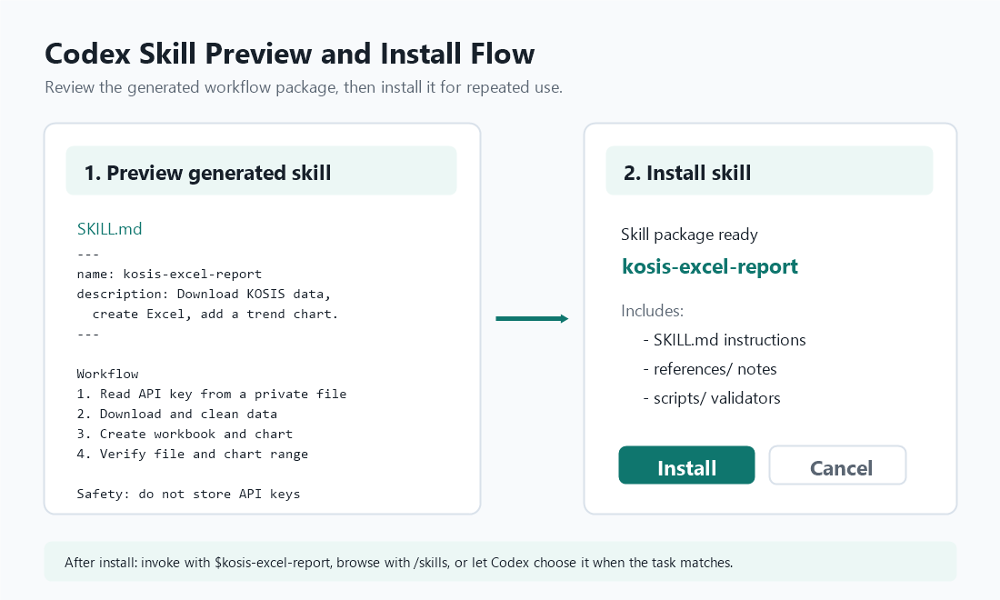
SKILL.md의 이름, 설명, 작업 절차, 포함 파일을 확인하고, 문제가 없을 때 Install로 설치한다.반복되는 업무를 매번 길게 설명하지 않아도 된다. 예를 들어 논문 교정, 공공데이터 수집, 엑셀 보고서 생성, HTML 강의안 배포처럼 절차와 기준이 있는 업무를 Skill로 만들면 결과 품질이 일정해진다.
Codex는 사용할 수 있는 Skill의 이름과 설명을 먼저 보고, 작업과 맞는 Skill을 선택하면 그때 SKILL.md 전체 지침을 읽는다. 이를 통해 많은 지침을 항상 대화에 넣지 않고도 필요한 순간에만 불러올 수 있다.
| 구분 | 역할 | 예시 |
|---|---|---|
SKILL.md |
Skill의 이름, 설명, 수행 절차, 검증 기준을 적는 핵심 파일 | “KOSIS 자료를 내려받아 엑셀과 차트를 생성하는 절차” |
references/ |
상세 기준, 템플릿, 예시 문서, API 설명 등 참고자료 보관 | 보고서 형식, 표준 용어집, 기관별 데이터 설명서 |
scripts/ |
반복 실행할 코드나 검증 스크립트 보관 | 엑셀 생성 스크립트, HTML 검증 스크립트, 데이터 정리 코드 |
.agents/
skills/
kosis-excel-report/
SKILL.md
references/
kosis-table-notes.md
scripts/
validate_excel.py---
name: kosis-excel-report
description: KOSIS 자료를 내려받아 엑셀 파일과 추세 차트를 만드는 반복 업무에 사용한다.
---
# KOSIS Excel Report Skill
## 사용할 때
- 사용자가 KOSIS 자료 수집, 엑셀 저장, 차트 생성을 요청할 때 사용한다.
## 작업 절차
1. API 키가 코드에 직접 들어가지 않았는지 확인한다.
2. 통계표 ID, 기간, 항목 코드를 확인한다.
3. 데이터를 내려받아 표 형태로 정리한다.
4. 엑셀 파일에 원자료 시트와 추세 시트를 만든다.
5. 날짜가 보이는 선그래프를 추가한다.
6. 생성된 파일, 시트명, 차트 범위를 검증한다.Skill은 두 방식으로 사용할 수 있다. 사용자가 /skills 명령이나 $ 언급으로 직접 선택할 수 있고, Skill의 설명이 작업과 잘 맞으면 Codex가 자동으로 선택할 수도 있다. 따라서 description에는 “언제 이 Skill을 써야 하는지”를 짧고 분명하게 적는 것이 중요하다.
/skills로 선택입력창에 /skills를 입력해 설치된 Skill 목록을 열고, 현재 업무에 맞는 Skill을 선택한다. 처음 사용하는 사용자에게 가장 설명하기 쉬운 방식이다.
$로 직접 호출Skill 이름을 알고 있으면 $kosis-excel-report처럼 프롬프트 앞에 붙여 명시적으로 호출한다. 특정 Skill을 반드시 쓰게 하고 싶을 때 적합하다.
프롬프트 내용이 Skill의 description과 잘 맞으면 Codex가 알아서 해당 Skill을 선택할 수 있다. 이 때문에 설명 문구가 중요하다.
$kosis-excel-report
KOSIS에서 최근 10년 월별 소비자물가지수 자료를 내려받아
엑셀 파일과 날짜가 표시된 추세 그래프를 만들어라./skills
설치된 Skill 목록에서 kosis-excel-report를 선택한 뒤,
최근 10년 월별 소비자물가지수 자료를 엑셀과 차트로 만들어 달라고 요청한다.행정학 연구에서는 논문을 읽을 때마다 연구질문, 이론, 방법, 자료, 주요 결과, 한계, 후속 연구 가능성을 반복적으로 정리한다. 이 절차를 Skill로 만들어 두면 논문 PDF나 초록을 검토할 때마다 같은 기준으로 선행연구 표를 만들 수 있다.
.agents/
skills/
literature-review-matrix/
SKILL.md
references/
review-matrix-template.md---
name: literature-review-matrix
description: 논문, 보고서, 초록을 바탕으로 선행연구 검토표와 연구 공백을 정리할 때 사용한다.
---
# Literature Review Matrix Skill
## 사용할 때
- 사용자가 선행연구 검토, 논문 요약, 연구 공백 정리, 이론·방법 비교를 요청할 때 사용한다.
## 작업 원칙
- 원문에서 확인되는 내용과 Codex의 해석을 구분한다.
- 논문이 주장하지 않은 내용을 과도하게 일반화하지 않는다.
- 인용 정보가 불완전하면 “확인 필요”로 표시한다.
- 한국어 문어체로 작성하되, 핵심 개념은 굵게 표시한다.
## 출력 형식
1. 연구별 요약표
- 저자/연도
- 연구질문
- 이론 또는 핵심 개념
- 자료와 방법
- 주요 결과
- 한계
- 내 연구와의 관련성
2. 공통 쟁점과 차이점
3. 남아 있는 연구 공백
4. 후속 연구질문 후보$literature-review-matrix
첨부한 논문 5편을 바탕으로 선행연구 검토표를 만들어라.
각 논문의 연구질문, 이론, 자료, 방법, 주요 결과, 한계, 내 연구와의 관련성을 정리하라.
마지막에는 공통 쟁점, 연구 공백, 후속 연구질문 후보를 제시하라.
원문에서 확인되지 않는 내용은 추정하지 말고 “확인 필요”라고 표시하라./skills
literature-review-matrix를 선택한 뒤,
“이 폴더의 논문 PDF들을 읽고 선행연구 검토표와 연구 공백을 정리하라”고 요청한다.| 공유 범위 | 저장 위치 | 적합한 경우 |
|---|---|---|
| 프로젝트 팀 공유 | 저장소의 .agents/skills/ |
한 프로젝트나 강의자료 제작팀이 같은 절차를 공유할 때 |
| 개인용 재사용 | 사용자 폴더의 $HOME/.agents/skills/ |
여러 프로젝트에서 개인적으로 반복 사용하는 업무가 있을 때 |
| 설치형 배포 | Plugin으로 묶어 배포 | 여러 Skill, 앱, 도구 연결, 스크립트를 함께 배포하고 싶을 때 |
ChatGPT에서도 반복 업무를 위한 Skill을 만들거나 설치해 사용할 수 있다. Codex Skill이 파일 수정, 명령 실행, 검증처럼 프로젝트 작업 절차를 안정화하는 데 초점이 있다면, ChatGPT Skill은 글쓰기, 분석, 자료 정리, 보고서 초안, 학습 보조처럼 대화형 지식 업무를 일정한 방식으로 수행하도록 돕는 데 유용하다. 실제 메뉴명과 제공 범위는 계정, 워크스페이스, 앱 버전에 따라 달라질 수 있으므로, ChatGPT의 Skill 또는 도구 관련 메뉴에서 확인한다.
| 구분 | ChatGPT Skill | Codex Skill |
|---|---|---|
| 주요 목적 | 대화형 업무의 답변 방식과 산출물 형식을 표준화 | 프로젝트 안의 파일 작업, 스크립트 실행, 검증 절차를 표준화 |
| 좋은 예 | 선행연구 요약, 정책보고서 초안, 수업 피드백, 면담 질문 생성 | 데이터 수집, 엑셀 생성, HTML 수정, 테스트 실행, 배포 점검 |
| 사용 방식 | ChatGPT 대화에서 Skill을 선택하거나, 해당 Skill을 쓰라고 요청 | /skills, $skill-name, 또는 자동 선택 |
| 공유 방식 | 개인 Skill, 워크스페이스 공유, 팀 라이브러리 방식으로 활용 가능 | 저장소의 .agents/skills/, 개인 폴더, Plugin 배포 |
ChatGPT에서 사용할 선행연구 검토 Skill을 만들어라.
이 Skill은 논문 초록, 논문 PDF, 연구보고서를 입력받아 선행연구 검토표를 만드는 용도이다.
Skill의 지침:
- 연구질문, 이론, 자료, 방법, 주요 결과, 한계, 내 연구와의 관련성을 표로 정리한다.
- 원문에서 확인되는 내용과 해석을 구분한다.
- 출처가 불완전하면 “확인 필요”라고 표시한다.
- 연구 공백과 후속 연구질문 후보를 마지막에 제시한다.
- 한국어 문어체로 작성한다.선행연구 검토 Skill을 사용해 첨부한 논문 3편을 정리하라.
각 논문을 같은 기준의 표로 비교하고,
마지막에는 공통 쟁점, 차이점, 연구 공백, 후속 연구질문 후보를 제시하라.수업에서는 학생들에게 같은 논문을 일반 ChatGPT 대화로 요약하게 한 결과와, 선행연구 검토 Skill을 사용한 결과를 비교하게 하면 Skill의 장점을 쉽게 이해할 수 있다. 핵심 차이는 매번 프롬프트를 길게 쓰지 않아도 같은 기준의 결과물을 얻을 수 있다는 점이다.
Workspace Agent는 특정 역할과 목적을 가진 AI 작업자를 워크스페이스 안에 만들어 두는 기능이다. ChatGPT 대화가 한 번의 질문과 답변에 가깝고, Skill이 반복 업무 절차를 저장하는 방식이라면, Workspace Agent는 이름, 역할, 지침, 참조자료, 사용할 도구, 시작 프롬프트, 배포 방식을 함께 묶은 지속적인 작업 주체에 가깝다.
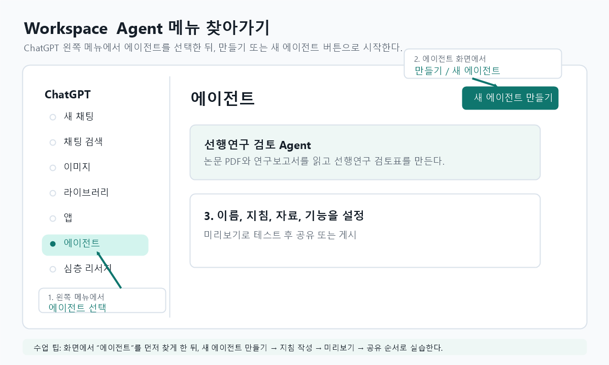
실습에서는 “ChatGPT 왼쪽 메뉴 → 에이전트 → 새 에이전트 만들기 → 이름과 설명 입력 → 지침 작성 → 자료와 기능 연결 → 미리보기 테스트 → 공유 또는 게시” 순서로 안내하면 된다. 화면 구성은 계정과 버전에 따라 조금 달라질 수 있으므로, 핵심은 왼쪽 메뉴에서 에이전트를 찾는 것과 만들기 버튼으로 Agent Builder에 들어가는 것이다.
여러 사람이 같은 역할의 AI를 반복해서 써야 할 때 적합하다. 예를 들어 “정책보고서 검토 에이전트”, “선행연구 검토 에이전트”, “민원 답변 초안 점검 에이전트”, “강의자료 제작 보조 에이전트”처럼 역할이 명확한 경우이다.
Skill은 특정 작업 절차를 담은 재사용 가능한 능력이고, Workspace Agent는 여러 Skill과 자료, 도구, 지침을 조합해 특정 역할을 수행하는 작업자에 가깝다.
이름: 선행연구 검토 Agent
설명:
행정학 논문과 연구보고서를 읽고 선행연구 검토표, 연구 공백, 후속 연구질문 후보를 정리하는 에이전트이다.
핵심 지침:
- 원문에서 확인되는 내용과 해석을 구분한다.
- 연구질문, 이론, 자료, 방법, 주요 결과, 한계, 내 연구와의 관련성을 표로 정리한다.
- 인용 정보가 불완전하면 “확인 필요”로 표시한다.
- 논문이 주장하지 않은 내용을 과도하게 일반화하지 않는다.
- 마지막에는 연구 공백과 후속 연구질문 후보를 제시한다.
시작 프롬프트:
1. 첨부한 논문 3편을 선행연구 검토표로 정리하라.
2. 이 연구계획서와 관련된 기존 연구의 공백을 찾아라.
3. 이 논문들의 이론과 방법론 차이를 비교하라.| 상황 | 추천 | 이유 |
|---|---|---|
| 한 번 묻고 끝나는 질문, 아이디어 탐색, 빠른 초안 | ChatGPT 일반 대화 | 설정 부담이 작고 즉시 시작할 수 있음 |
| 같은 형식의 결과물을 반복해서 만들고 싶음 | Skill | 절차, 출력 형식, 검증 기준을 재사용할 수 있음 |
| 여러 기능과 자료를 조합한 역할을 팀이 계속 사용해야 함 | Workspace Agent | 역할, 지침, 참조자료, 도구, 시작 프롬프트를 묶어 공유 가능 |
| 실제 파일 수정, 코드 실행, 테스트, 배포 검증이 필요함 | Codex 또는 Codex Skill | 작업 폴더의 파일을 읽고 수정하며 명령 실행과 검증이 가능 |
| 정기적으로 알림이나 점검을 받고 싶음 | Tasks 또는 게시된 Agent의 일정 기능 | 반복 시점과 후속 조치를 미리 정할 수 있음 |
Part 3
ChatGPT와 Codex는 같은 OpenAI 모델 계열을 바탕으로 하지만, 쓰임새와 작업 방식이 다르다. ChatGPT는 범용 대화와 지식 작업에 강하고, Codex는 실제 파일을 읽고 수정하고 명령을 실행하며 개발 작업을 끝까지 진행하도록 설계된 코딩 에이전트이다.
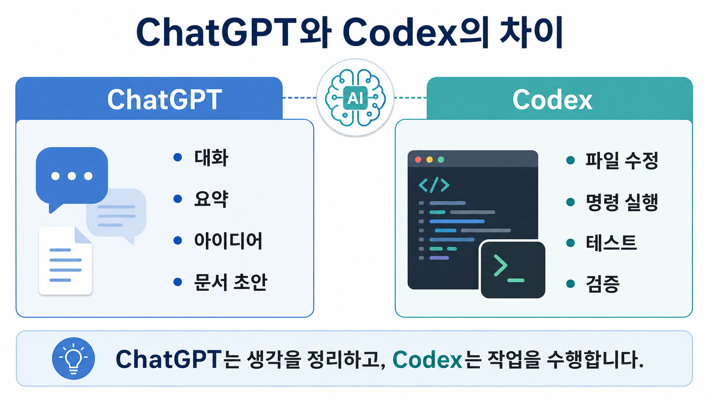
| 구분 | ChatGPT | Codex |
|---|---|---|
| 주요 목적 | 질문 답변, 글쓰기, 요약, 아이디어 정리, 범용 업무 지원 | 코드 작성, 디버깅, 테스트, 리뷰, 파일 수정, 개발 자동화 |
| 작업 대상 | 대화창에 입력한 텍스트, 첨부 파일, 연결된 도구 | 현재 프로젝트 폴더, 저장소 파일, 터미널 명령, 테스트 결과 |
| 작업 방식 | 답변을 생성하고 사용자가 직접 적용하는 경우가 많다. | 파일을 직접 읽고 고치며, 필요한 명령을 실행하고 결과를 검증한다. |
| 검증 | 설명과 추론 중심이며, 실행 검증은 사용자가 따로 해야 할 때가 많다. | 테스트, 빌드, 스크립트 실행, 화면 확인까지 요청할 수 있다. |
| 권한 관리 | 대체로 대화와 도구 호출 권한 중심이다. | 파일 쓰기, 네트워크, 외부 폴더 접근, 위험 명령에 대해 샌드박스와 승인 절차가 적용된다. |
ChatGPT와 Codex는 모두 사용자가 제공한 맥락을 바탕으로 답하지만, 무엇을 참조하는지와 참조한 내용을 어떻게 행동으로 옮기는지가 다르다. ChatGPT는 대화, 첨부 파일, 프로젝트 소스, 메모리, 연결된 도구를 중심으로 답변을 만들고, Codex는 현재 작업 폴더의 실제 파일, 터미널 출력, 테스트 결과, Git 변경 사항, 승인된 도구 실행 결과를 중심으로 작업한다.
| 구분 | ChatGPT의 참조 | Codex의 참조 |
|---|---|---|
| 기본 참조 단위 | 현재 대화, 사용자가 붙여 넣은 텍스트, 첨부 파일, 프로젝트 소스 | 현재 작업 폴더, 저장소 파일, 실행한 명령의 출력, 테스트 결과 |
| 지속 맥락 | 메모리, 프로젝트 지침, 프로젝트 안의 관련 대화와 파일 | AGENTS.md, .codex/config.toml, 프로젝트 구조, Git 상태 |
| 자료 접근 방식 | 사용자가 올리거나 연결한 자료를 읽고 답변에 반영 | 파일을 직접 열어 읽고, 필요한 경우 수정하고, 명령으로 결과를 확인 |
| 결과 적용 | 대체로 사용자가 답변을 복사하거나 해석해 적용 | Codex가 파일 변경, 스크립트 실행, 테스트, 빌드, 배포 보조까지 수행 가능 |
| 주의할 점 | 소스에 없는 내용은 일반 지식이나 추론으로 보완될 수 있으므로 근거 확인 필요 | 작업 폴더 밖의 파일, 네트워크, 위험 명령은 권한과 승인 범위 안에서만 가능 |
새 기능, 페이지, 스크립트, 테스트, 문서 등을 기존 프로젝트 구조에 맞춰 만들 수 있다.
낯선 저장소의 구조, 함수 역할, 데이터 흐름, 오류 원인을 설명하게 할 수 있다.
버그, 회귀 위험, 누락된 테스트를 찾고 필요한 경우 직접 수정과 검증까지 이어갈 수 있다.
Codex는 여러 방식으로 사용할 수 있다. 가장 쉬운 방법은 Codex 앱이나 IDE 확장을 설치해 로그인하는 것이고, 터미널 중심으로 쓰려면 Codex CLI를 설치하면 된다.
프로젝트를 열고, 여러 에이전트 스레드, 브라우저 확인, 파일 미리보기, 플러그인, 스킬 등을 함께 쓰기에 좋다.
VS Code 같은 개발 환경 안에서 현재 열어둔 파일과 변경 내용을 보며 Codex를 쓰고 싶을 때 적합하다.
터미널에서 저장소를 열고 바로 Codex를 실행하는 방식이다. 자동화, 스크립트, 서버 환경에서 특히 유용하다.
# macOS, Linux, WSL에서 설치
curl -fsSL https://chatgpt.com/codex/install.sh | sh
# 설치 후 실행
codexWindows에서는 Codex 앱을 쓰거나, PowerShell의 네이티브 Windows 샌드박스 또는 WSL2 환경에서 CLI를 사용할 수 있다.
# WSL2 설치가 필요한 경우, 관리자 PowerShell에서 실행
wsl --install
# WSL 안에서 Codex CLI 설치
curl -fsSL https://chatgpt.com/codex/install.sh | sh
codex| 방식 | 설명 | 추천 상황 |
|---|---|---|
| ChatGPT 로그인 | 브라우저에서 ChatGPT 계정으로 로그인한다. Codex 앱, CLI, IDE 확장에서 기본적인 로그인 방식으로 사용할 수 있다. | 일반 사용자, 앱 기능, 클라우드 작업, ChatGPT 워크스페이스 기능을 함께 쓰는 경우 |
| API 키 로그인 | OpenAI Platform API 키를 사용한다. 사용량은 API 계정 과금 기준을 따른다. | CI/CD, 자동화 스크립트, 공유 서버 같은 프로그램 기반 실행 환경 |
codex를 실행해 로그인 화면이나 프롬프트가 뜨는지 확인한다. Windows에서 샌드박스나 파일 접근 문제가 나면 작업 폴더를 명확히 열고, 필요한 경우 Codex의 승인 요청 내용을 확인한 뒤 허용한다.
Codex는 로컬 파일을 읽고 수정하거나 명령을 실행할 수 있으므로, 작업 폴더와 승인 정책을 이해하는 것이 중요하다.
| 개념 | 의미 | 사용 팁 |
|---|---|---|
read-only |
파일을 읽을 수 있지만 수정은 제한된다. | 분석, 설명, 리뷰처럼 변경이 필요 없는 작업에 적합하다. |
workspace-write |
현재 작업 폴더 안의 파일을 수정할 수 있다. | 일반적인 개발 작업에 가장 무난한 기본값이다. |
| 승인 요청 | 네트워크, 외부 폴더 접근, 위험한 명령 등은 사용자 허가가 필요할 수 있다. | 왜 필요한지 확인하고, 납득되는 경우에만 승인한다. |
이 저장소 구조를 파악하고,
주요 실행 명령과 진입점을 정리하라.다음 오류를 재현하고 원인을 찾아 수정하라.
수정 후 관련 테스트를 실행하라./review변경 사항, 특정 커밋, PR 스타일 diff를 검토할 때 사용할 수 있다.
/initCLI에서는 저장소용 AGENTS.md 초안을 만들 때 사용할 수 있다.
Codex에서는 입력창에 /를 입력해 명령어 목록을 열 수 있다. 명령어는 Codex 앱, IDE 확장, CLI 중 어디에서 쓰는지에 따라 보이는 항목이 달라질 수 있다. 아래 표는 강의에서 자주 다룰 만한 대표 명령어이다.
| 명령어 | 주요 사용 위치 | 기능 | 사용 예 |
|---|---|---|---|
/goal |
앱, CLI, IDE | Codex가 계속 따라갈 지속 목표를 설정하거나 확인한다. 긴 작업을 여러 단계로 진행할 때 유용하다. | /goal KOSIS 자료 수집부터 엑셀 차트 생성까지 완료하라 |
/plan |
앱, CLI | 바로 수정에 들어가기 전에 작업 계획을 먼저 세우게 한다. | /plan 이 사이트에 새 강의 페이지를 추가하는 절차를 제안하라 |
/status |
앱, CLI, IDE | 현재 스레드, 모델, 컨텍스트 사용량, 한도, 승인 정책 같은 세션 상태를 확인한다. | 작업이 길어졌을 때 남은 컨텍스트나 현재 설정을 점검한다. |
/review |
앱, CLI, IDE | 작업 트리나 변경사항을 코드 리뷰 관점에서 살피게 한다. | 커밋 전 버그, 누락된 테스트, 위험한 변경을 확인한다. |
/init |
앱, CLI | 현재 프로젝트에 맞는 AGENTS.md 초안을 만든다. 저장소별 작업 규칙을 남길 때 쓴다. |
반복적으로 지켜야 할 테스트 명령, 코딩 규칙, 배포 절차를 문서화한다. |
/mcp |
앱, CLI | 연결된 MCP 도구나 외부 도구 서버 상태를 확인한다. | GitHub, 문서, 데이터베이스 같은 외부 도구 연결 여부를 확인한다. |
/skills |
앱, CLI, IDE | 현재 사용할 수 있는 Skill을 찾아보고 선택한다. | 논문 교정, 데이터 분석, 문서 생성처럼 반복 업무에 맞는 Skill을 고른다. |
/feedback |
앱, CLI, IDE | 문제 상황이나 개선 의견을 Codex 유지관리자에게 보낸다. 필요한 경우 로그를 포함할 수 있다. | 반복 오류, UI 문제, 비정상 동작을 보고한다. |
/model |
CLI | 현재 사용할 모델과 가능한 경우 추론 강도를 바꾼다. | 빠른 작업과 깊은 분석 작업 사이에서 모델 설정을 조정한다. |
/permissions |
CLI | Codex가 사용자에게 묻지 않고 할 수 있는 작업 범위를 조정한다. | 읽기 전용 검토에서 파일 수정 허용 모드로 바꾸거나, 반대로 더 엄격하게 제한한다. |
/diff |
CLI | Git 기준 변경사항과 아직 추적되지 않은 파일을 확인한다. | Codex가 바꾼 파일을 커밋 전에 한 번에 검토한다. |
/compact |
CLI | 긴 대화 내용을 요약해 컨텍스트 사용량을 줄인다. | 긴 디버깅이나 긴 강의안 편집 뒤에도 핵심 맥락을 유지한다. |
/clear |
CLI | 터미널 화면과 현재 대화를 정리하고 새 대화를 시작한다. 단순 화면 지우기인 Ctrl+L과 다르다. |
현재 맥락을 끊고 같은 저장소에서 완전히 새 요청을 시작한다. |
/new |
CLI | CLI를 종료하지 않고 새 대화를 시작한다. | 현재 작업은 끝났지만 같은 터미널에서 다른 작업을 바로 시작한다. |
/quit, /exit |
CLI | Codex CLI 세션을 종료한다. | 중요한 변경사항을 저장하거나 커밋한 뒤 종료한다. |
/auto-context |
IDE | 최근 파일과 IDE 맥락을 자동으로 포함할지 켜고 끈다. | 현재 열어 둔 파일 중심으로 Codex가 더 잘 이해하게 하거나, 맥락을 의도적으로 줄인다. |
/local, /cloud |
IDE | 작업을 로컬 작업공간에서 수행할지, 클라우드 모드로 원격 실행할지 전환한다. | 로컬 파일을 직접 고칠 작업과 원격으로 분리해 실행할 작업을 구분한다. |
/를 입력해 현재 환경에서 실제로 사용할 수 있는 명령을 확인한다.
Codex의 추론 선택 옵션은 모델이 답하기 전에 얼마나 깊게 생각할지를 조절하는 설정이다. 추론 강도가 높을수록 복잡한 문제를 더 꼼꼼히 살필 수 있지만, 응답 시간이 길어지고 토큰 사용량이나 사용 한도가 더 빨리 소모될 수 있다.
| 옵션 | 차이 | 추천 업무 |
|---|---|---|
low |
가장 빠른 편이다. 명확하고 작은 작업에 적합하며 사용량 부담이 적다. | 문구 수정, 단순 코드 변경, 짧은 설명, 명확한 파일 생성 |
medium |
속도와 품질의 균형이다. 대부분의 일반 작업에서 좋은 기본값이다. | 일반적인 코드 작성, 엑셀 자동화, 문서 정리, 데이터 가공 |
high |
더 오래 생각한다. 복잡한 맥락, 여러 파일, 디버깅, 검토 작업에서 품질이 좋아질 수 있다. | 복잡한 오류 분석, 보안 검토, 대규모 리팩터링, 정책자료 분석 |
xhigh |
설정 파일에서 사용할 수 있는 더 높은 추론 강도이다. 긴 계획이나 추론이 많은 작업에 적합하지만 가장 느리고 사용량도 크다. | 여러 단계의 자동화, 장시간 에이전트 작업, 까다로운 원인 분석 |
medium으로 시작하고, 결과가 얕거나 놓치는 부분이 있으면 high로 올린다. 단순 반복 작업은 low가 더 효율적이다.
# ~/.codex/config.toml 또는 프로젝트의 .codex/config.toml
model_reasoning_effort = "medium"
# 계획 모드에서만 더 깊게 생각하게 하고 싶을 때
plan_mode_reasoning_effort = "high"Codex 앱이나 IDE에서는 모델 선택 메뉴에서 모델과 함께 추론 강도(low, medium, high)를 고를 수 있다. CLI에서는 /model 명령으로 활성 모델과 가능한 추론 강도를 바꿀 수 있다.
Part 4
아래 예시는 Codex에게 공공데이터 수집, 엑셀 저장, 차트 생성까지 한 번에 맡기는 방식이다. KOSIS 통계표 ID와 항목 코드는 바뀔 수 있으므로, 실행 전에 Codex가 KOSIS OpenAPI 문서나 통계표 메타데이터를 확인하게 지시하는 것이 좋다.
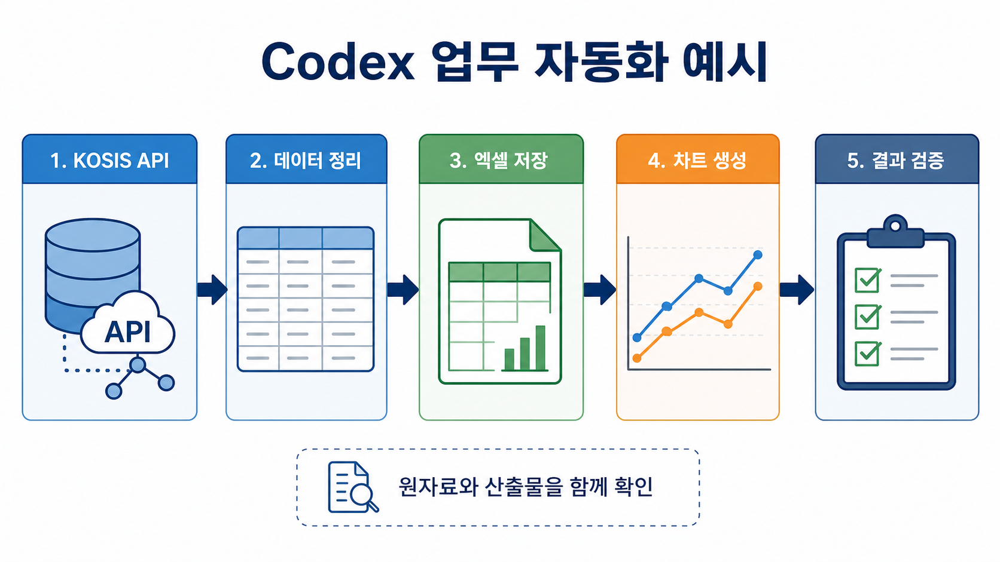
C:\Users\owner\AI Lecture\codex\kosis_api_key.txt 파일에 저장한다. 인증키를 코드에 직접 적으면 공유나 커밋 때 노출될 수 있다.
KOSIS OpenAPI에서 최근 10년 월별 소비자물가지수 자료를 가져와
data/kosis_price_index.xlsx 파일로 저장하는 Python 스크립트를 만들라.
요구사항:
1. KOSIS 통계표 ID, 항목 코드, 주기 파라미터가 최신인지 먼저 확인하라.
2. API 키는 C:\Users\owner\AI Lecture\codex\kosis_api_key.txt 파일에서 읽게 하라.
3. 엑셀 파일에는 원자료 시트와 정리된 추세 시트를 분리하라.
4. 엑셀 안에 월별 물가지수 선그래프를 삽입하고, 수평축에는 날짜(YYYY-MM)가 나타나게 하라.
5. 실행 방법과 필요한 패키지를 README 또는 최종 답변에 정리하라.
6. 가능하면 스크립트를 실행해 파일이 실제로 만들어졌는지 확인하라.scripts/fetch_kosis_price_index.py: KOSIS API 호출, JSON 정리, 엑셀 저장을 담당한다.data/kosis_price_index.xlsx: 원자료, 정리표, 차트가 들어 있는 엑셀 파일이다.requirements.txt: requests, pandas, openpyxl 같은 필요한 패키지를 적는다.from pathlib import Path
import pandas as pd
import requests
from openpyxl import load_workbook
from openpyxl.chart import LineChart, Reference
KEY_PATH = Path(r"C:\Users\owner\AI Lecture\codex\kosis_api_key.txt")
API_KEY = KEY_PATH.read_text(encoding="utf-8").strip()
OUT = Path("data/kosis_price_index.xlsx")
# Codex가 실행 전에 KOSIS 문서에서 최신 orgId, tblId, itmId, objL1 등을 확인하게 한다.
params = {
"method": "getList",
"apiKey": API_KEY,
"format": "json",
"jsonVD": "Y",
"orgId": "확인필요",
"tblId": "확인필요",
"prdSe": "M",
"newEstPrdCnt": 120,
}
response = requests.get(
"https://kosis.kr/openapi/Param/statisticsParameterData.do",
params=params,
timeout=30,
)
response.raise_for_status()
raw = pd.DataFrame(response.json())
trend = raw.rename(columns={"PRD_DE": "period", "DT": "price_index"})
trend["price_index"] = pd.to_numeric(trend["price_index"], errors="coerce")
trend = trend[["period", "price_index"]].dropna().sort_values("period")
OUT.parent.mkdir(parents=True, exist_ok=True)
with pd.ExcelWriter(OUT, engine="openpyxl") as writer:
raw.to_excel(writer, sheet_name="raw_kosis", index=False)
trend.to_excel(writer, sheet_name="price_trend", index=False)
wb = load_workbook(OUT)
ws = wb["price_trend"]
chart = LineChart()
chart.title = "KOSIS 월별 물가지수 추세"
chart.y_axis.title = "물가지수"
chart.x_axis.title = "기간"
data = Reference(ws, min_col=2, min_row=1, max_row=ws.max_row)
cats = Reference(ws, min_col=1, min_row=2, max_row=ws.max_row)
chart.add_data(data, titles_from_data=True)
chart.set_categories(cats)
chart.height = 9
chart.width = 18
ws.add_chart(chart, "D2")
wb.save(OUT)orgId, tblId, itmId, 분류 코드가 맞지 않으면 빈 데이터가 올 수 있다. Codex에게 “빈 데이터면 메타데이터를 다시 확인하고 원인을 설명하라”고 함께 요청하면 좋다.
Codex는 단순히 코드를 만드는 도구가 아니라, 자료 수집, 엑셀 자동화, 문서 초안, 업무 점검표, 데이터 시각화처럼 반복적인 행정 업무를 자동화하는 데 활용할 수 있다. 다만 개인정보, 비공개 문서, 보안자료, 법적 판단이 필요한 내용은 입력 전에 비식별화하고 최종 검토는 담당자가 해야 한다.
KOSIS, 공공데이터포털, 지자체 열린데이터에서 자료를 가져와 엑셀 표, 그래프, 요약표를 만들 수 있다.
KOSIS에서 최근 5년간 우리 시도 소비자물가지수와 고용률 자료를 가져와
엑셀 파일로 저장하고, 연도별 추세 그래프를 포함하라.
API 키는 환경변수에서 읽고, 사용한 통계표 ID와 검증 결과를 정리하라.통계표, 회의록, 조사 결과를 바탕으로 현황, 쟁점, 시사점, 정책 대안을 정리하는 초안을 만들 수 있다.
첨부한 엑셀의 지역별 청년고용 지표를 분석해
2쪽 분량의 정책 브리프 초안을 작성하라.
구성은 현황, 주요 특징, 정책적 시사점, 추가 확인 필요사항으로 하라.
수치는 원자료 기준으로만 쓰고 추정은 표시하라.반복 민원에 대해 법령, 지침, 내부 기준을 바탕으로 답변 초안을 만들고 표현을 공문체로 다듬을 수 있다.
아래 민원 내용을 바탕으로 답변 초안을 작성하라.
관련 법령이나 지침은 제공한 문서 안에서만 근거를 찾고,
확인되지 않은 내용은 "추가 확인 필요"로 표시하라.
개인정보는 답변문에 포함하지 말라.개정 전후 조문, 중앙부처 지침과 지자체 조례, 유사 제도 간 차이를 표로 정리할 수 있다.
두 문서의 조항을 비교해 변경된 부분을 표로 정리하라.
열은 조항, 기존 내용, 변경 내용, 업무 영향, 확인 필요사항으로 하라.
법적 해석은 단정하지 말고 실무상 검토 포인트로 표현하라.사업별 집행률, 월별 지출, 예산 대비 실적을 계산하고 위험 사업을 표시하는 대시보드형 엑셀을 만들 수 있다.
이 예산 집행 엑셀을 분석해 사업별 집행률과 미집행액을 계산하고,
집행률 60% 미만 사업을 별도 시트에 표시하라.
전체 요약표와 막대그래프를 포함한 새 엑셀 파일을 만들라.회의 메모를 안건, 결정사항, 담당부서, 기한, 후속조치로 정리하고 배포용 문안으로 바꿀 수 있다.
아래 회의 메모를 공식 회의록 초안으로 정리하라.
안건별로 결정사항, 담당자, 기한, 후속조치를 표로 만들고,
불명확한 내용은 질문 목록으로 따로 정리하라.여러 CSV, 엑셀, 한글에서 추출한 텍스트 파일을 합치고 형식을 맞추는 반복 작업을 스크립트로 자동화할 수 있다.
이 폴더의 모든 CSV 파일을 하나로 합치고,
기관명, 기준월, 지표명, 값 열을 표준 형식으로 정리하는 스크립트를 만들라.
오류 파일은 건너뛰지 말고 별도 로그에 기록하라.신규 담당자가 따라 할 수 있도록 업무 절차, 필요 서류, 확인 기준, 자주 발생하는 오류를 매뉴얼로 정리할 수 있다.
아래 업무 절차 메모를 신규 담당자용 체크리스트로 바꾸라.
단계별 입력자료, 처리 시스템, 확인 기준, 산출물, 주의사항을 포함하라.
실제 시스템 접속 정보나 비밀번호는 포함하지 말라.| 넣어야 할 내용 | 작성 방법 |
|---|---|
| 업무 목표 | “엑셀 파일 생성”, “보고서 초안 작성”, “조례 비교표 작성”처럼 산출물을 분명히 적는다. |
| 근거 자료 | 사용할 파일, URL, 통계표, 법령, 지침을 지정하고, 제공 자료 밖의 추정은 표시하게 한다. |
| 형식 | 엑셀 시트명, 표 열 이름, 보고서 목차, 분량, 문체를 구체적으로 적는다. |
| 검증 | 합계 검산, 결측치 확인, API 응답 건수 확인, 원자료와 결과표 대조를 요청한다. |
| 보안 | 개인정보 비식별화, 비공개 자료 제외, 인증키 환경변수 사용, 최종 담당자 검토를 명시한다. |
Codex가 작업을 끝내면 변경된 파일과 검증 결과를 먼저 확인한다. 앱에서는 diff 패널로 변경 내용을 직접 보고, 특정 줄에 피드백을 남겨 다음 턴의 맥락으로 줄 수 있다.
AGENTS.md 활용반복되는 코딩 규칙, 테스트 명령, 리뷰 기준은 저장소의 AGENTS.md에 적어두면 매번 설명하지 않아도 된다.
작은 수정은 바로 맡기고, 큰 기능은 계획, 구현, 검증, 리뷰 순서로 나누면 안정적이다.
GitHub, 브라우저, 문서, 스프레드시트 같은 도구는 연결 권한이 있을 때 Codex가 더 넓은 작업을 처리할 수 있다.
This guide is organized around how graduate students and instructors can actually use LLMs for teaching and research. It begins with LLM fundamentals, moves to ChatGPT workflows for thinking and drafting, then introduces Skills and Workspace Agents for reusable work, and finally shows how Codex can create files, run code, and verify outputs.
Learn the basics of LLMs, prompts, context, hallucination, and verification.
Connect ChatGPT menus, projects, Study Mode, Tasks, and image features to teaching and research.
Use Skills and Workspace Agents to standardize repeated work and team collaboration.
Use Codex for public-data collection, Excel generation, code edits, and validation.
Part 1
A large language model predicts the next token based on context. It does not simply retrieve a stored answer. It estimates likely continuations from patterns learned during training and from the current prompt.
A unit of text processed by the model. A word may contain one or more tokens.
The amount of text the model can consider at one time, including instructions, files, and conversation history.
A plausible but incorrect answer. Important claims should be checked against sources or data.
Good AI use begins by avoiding repeated instructions. In ChatGPT, users can configure response style and memory. In Codex, users can write project rules so repeated work becomes more consistent.
| Tool | Where to Set It | What to Include |
|---|---|---|
| ChatGPT Custom Instructions | Settings → Personalization → Custom Instructions | Role, interests, preferred tone, output format, units, and standards |
| ChatGPT Memory | Settings → Personalization → Memory | Stable preferences and background information; sensitive information should be avoided |
| Codex global instructions | ~/.codex/AGENTS.md | Personal working style, reporting format, and verification habits |
| Codex project instructions | AGENTS.md in a repository | Project structure, run commands, tests, restricted files, and deployment rules |
I am a public administration professor. Prefer concise, structured answers.
When discussing policy, separate facts, interpretations, and recommendations.
Use formal written Korean unless I ask for another style.A project is a workspace that groups conversations, files, instructions, and related outputs around one topic or task. A normal chat is useful for a single exchange, while a project is useful when work continues across several days, files, or phases.
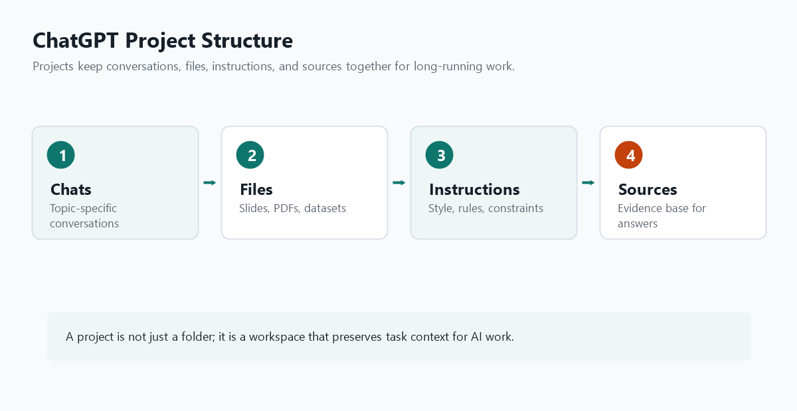
Projects are useful for lecture preparation, paper review, policy reports, data analysis, and administrative manuals where the same context and files need to be reused.
A regular chat is closer to an independent question-and-answer session. A project keeps related chats and files together and can apply project-specific instructions.
Project instructions define rules that apply only inside that project. For a lecture-material project, the instructions may specify tone, target audience, example level, terms to avoid, and preferred sources.
This project is for creating AI lecture materials for graduate students in public administration.
Use a formal written style.
Highlight important concepts in bold and include practical examples.
Prioritize Korean public data sources such as KOSIS, data.go.kr, Government24, and Open Fiscal Data when examples are needed.
Do not include personal data, API keys, or unpublished internal materials in outputs.The Sources option in a project prompt can be understood as the place where users control what materials ChatGPT should rely on when answering. Project instructions define “how to answer,” while sources define “what to answer from.” Sources may include uploaded lecture notes, article PDFs, meeting notes, data files, and previous conversations inside the project.
| Element | Role | Example |
|---|---|---|
| Project instructions | Define style, standards, and constraints | “Use formal writing,” “Explain for graduate students,” “Exclude sensitive information” |
| Sources | Define the reference materials and evidence base | Uploaded PDFs, lecture notes, datasets, previous project chats |
| Memory | Reflect stable user preferences or recurring context | Preferred tone, analysis habits, recurring work background |
When using sources, prompts become more reliable if the source scope is stated explicitly. For example: “Use only the lecture files included in the project sources,” “Compare the uploaded article PDF with the previous project discussion,” or “If the sources do not support a claim, mark it as requiring verification.”
Use only the lecture notes and meeting memo included in the project sources.
Put any outside knowledge in a separate “Needs further verification” section.
Separate source-confirmed points from inferred points in a table.When using a project, it is important to check how ChatGPT references memory. Conceptually, users can think of two main modes: using the project together with general memory, or keeping the project closer to project-only memory so that the project relies mainly on its own chats and instructions. Actual menu names may vary by account and interface version, so users should check the project's settings or more-options menu.
| Mode | Best For | Watch Out For |
|---|---|---|
| Use with general memory | When personal style, role, or preferred formats are useful for the project | Preferences from other conversations may influence project answers |
| Project-only memory | When a course, research task, contract, or internal review should be separated from other work | Preferences and context outside the project may be less visible |
| Temporary chat or memory off | When sensitive material is involved or traces should be minimized | Personalization and continuity are reduced |
Sharing a project can help a team work from the same goal, materials, and instructions. This is useful for lecture teams, research assistants, or policy-report teams. Before sharing, check whether the project contains sensitive files, private conversations, credentials, or materials with distribution restrictions.
Check for student information, unpublished research, API keys, internal documents, and restricted materials.
Write role assignments, file-naming rules, final reviewer, style rules, and citation principles into the project instructions.
Keep important decisions in the conversation and store final outputs in a separate document or repository to avoid version confusion.
Part 2
A good Codex request states the goal, the relevant files or data, the desired output, constraints, and how the result should be verified.
Please inspect this project and update the Codex lecture page.
Add a section explaining Deep Research and regular search.
Use a formal written style and verify that the text appears in index.html.Use verbs such as summarize, compare, revise, verify, create, or extract.
State the audience, purpose, source material, and decision situation.
Ask for bullets, tables, lesson plans, report outlines, code, or checklists.
I am a public administration professor at [Seoul National University].
Suggest ChatGPT use cases that I can try within the next two weeks,
that have high academic value and low complexity.
For each use case, include:
1. When to use it: "When preparing for class...", "When reviewing a paper...", etc.
2. A prompt that can be copied and used immediately
3. Output format: bullets, table, lesson plan, research project outline, etc.
4. Expected benefits: time savings, better understanding, improved output quality, fewer errors and omissionsIf an answer is unsatisfactory, ask why the prompt failed and how to rewrite it to obtain the desired result. This turns a poor answer into material for prompt improvement.
Study Mode is a way to use ChatGPT as a tutor that asks questions, gives hints, explains step by step, and checks understanding instead of giving the final answer immediately. A regular chat is useful for getting an answer quickly; Study Mode is useful for designing the learning process. The exact menu name or location may vary by account and interface version, so users should check the tool picker or learning-related options in ChatGPT.
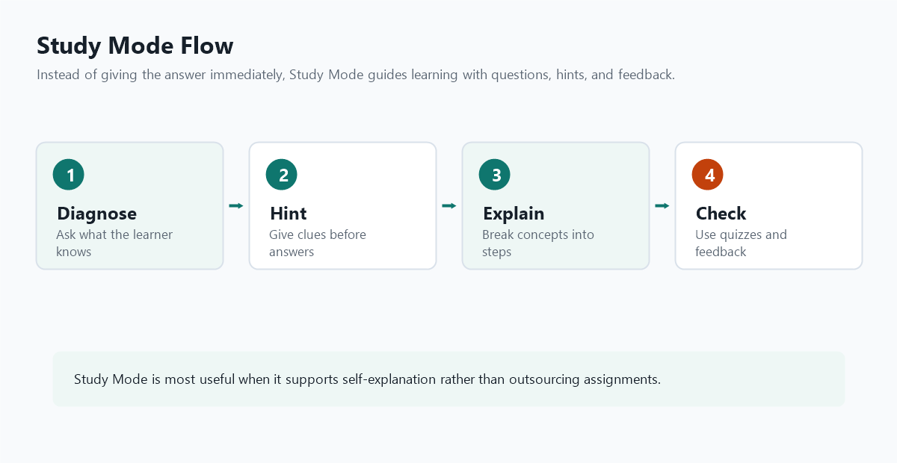
Regular answers are fast for summaries, direct explanations, and draft generation. Study Mode checks the learner's current understanding, asks smaller questions, explains mistakes, and guides the next step.
Instead of having students outsource an assignment, instructors can use Study Mode to support concept learning, argument development, data interpretation, code understanding, and exam preparation.
| Situation | How to Ask | Expected Benefit |
|---|---|---|
| Concept learning | “Do not explain accountability immediately. First ask questions to check my understanding, then explain step by step.” | Students inspect the concept structure instead of memorizing passively |
| Reading articles | “Guide me with questions so I can identify the research question, theory, method, and limitations myself.” | Improves summarization and critical reading skills |
| Statistics and code | “Do not interpret the regression table immediately. Ask me about coefficients, standard errors, and p-values one by one and give feedback.” | Reduces mistakes in interpreting results |
| Exam preparation | “After I answer, grade it using a rubric and give me follow-up questions only on weak points.” | Supports repeated practice and targeted review |
@Study ModeIn the ChatGPT input box, users can type @ and select the learning-related option, which may appear as @Study Mode, @study, or a localized name depending on account, app version, and language settings.
@Study Mode
I want to study the difference between internal validity and external validity in policy evaluation.
Do not explain the answer immediately.
First ask questions to check what I already understand, then explain step by step.Act like Study Mode.
The topic is “the difference between internal validity and external validity in policy evaluation.”
Do not give the full explanation immediately.
First ask me two questions to check what I already understand.
After I answer, help me correct mistakes with hints.
At the end, give me a five-question check quiz and grade my answers.Tasks let users ask ChatGPT to remind, check, summarize, or prepare something at a specific time or on a recurring schedule. A normal chat responds when the user asks; Tasks are closer to a proactive assistant that follows a schedule or condition set in advance. Availability and menu location may vary by account, plan, and app version.
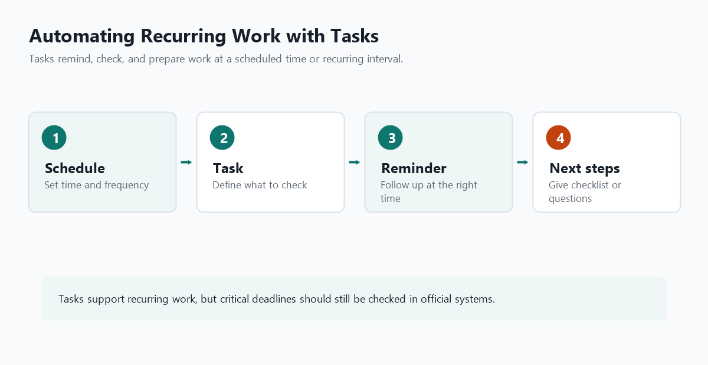
Tasks are useful for recurring work such as meeting preparation, weekly source checks, draft report reminders, class preparation checklists, dissertation progress reviews, and policy-issue monitoring.
Tasks mainly define when ChatGPT should remind or follow up. Codex directly edits files and runs commands. Use Tasks for recurring reminders, and Codex for file creation, verification, and workflow automation inside a project.
| Work Type | Example Task Request | Benefit |
|---|---|---|
| Regular meeting preparation | “Every Monday at 9 a.m., remind me of the checklist for this week's policy data meeting.” | Reduces missed preparation steps |
| Class preparation | “Every Wednesday at 3 p.m., remind me to review next week's lecture materials.” | Helps manage teaching preparation |
| Article writing | “Every Friday at 5 p.m., send me five questions to review my writing progress this week.” | Supports long-term project momentum |
| Policy monitoring | “Every morning at 8 a.m., remind me to check major local finance issues.” | Builds a monitoring routine |
Every Monday at 9 a.m., remind me of the following.
Create a checklist for preparing this week's public administration class.
Include lecture revision, reading materials, practice data, expected student questions, and assignment announcements.Every Friday at 4 p.m., help me review my paper-writing progress.
Ask five questions about what I wrote this week, where I am stuck, and what I should finish next week.
End by helping me turn next week's work into no more than three action items.Image features allow users to create images from text descriptions or analyze, revise, and transform uploaded images. In teaching, they are useful for visualizing difficult concepts and quickly drafting recurring visual materials such as posters, report covers, and title-slide backgrounds.
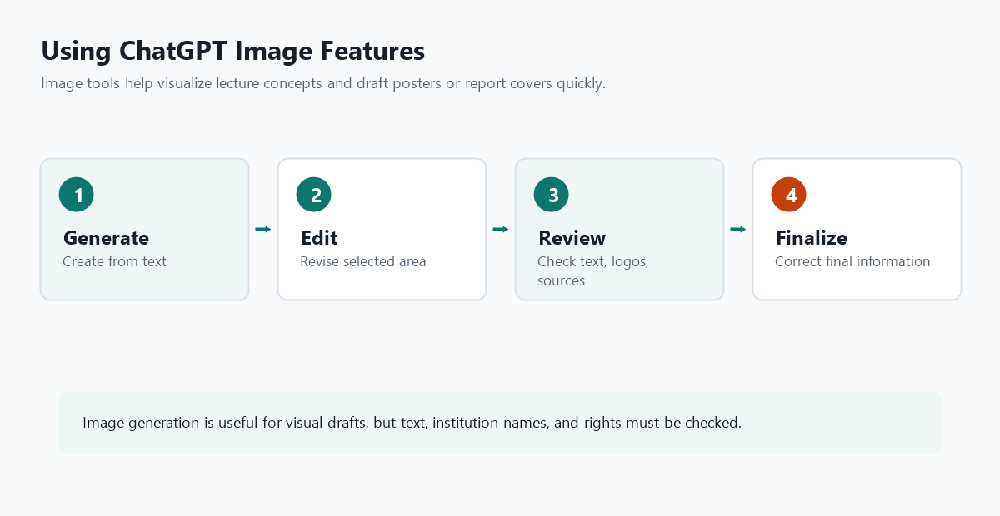
Mind maps, concept diagrams, comparison graphics, process flows, and policy-cycle illustrations can make abstract ideas easier to understand.
Users can draft lecture posters, seminar announcements, report covers, title-slide backgrounds, and card-news style visuals.
| Use Case | Example Prompt | Check Carefully |
|---|---|---|
| Mind map | “Create a mind map explaining the policy process in public administration. Include agenda setting, policy formulation, decision making, implementation, evaluation, and feedback.” | Generated text may contain errors; check all labels |
| Lecture poster | “Create a poster for a graduate lecture titled ‘Public Data and AI.’ Use a professional, calm style suitable for a Korean university seminar.” | Enter dates, locations, and institution names accurately in a separate editor |
| Report cover | “Create a cover image for a local finance data analysis report. Combine administrative documents, maps, and charts in a restrained style.” | Check logo permissions and institutional branding rules |
| Concept comparison | “Create a two-column infographic comparing internal validity and external validity. The left side should show causal inference within a study; the right side should show generalization to other cases.” | Review whether the concept relationship is accurate |
Create a lecture-ready mind map image explaining the policy process.
Place “Policy Process” at the center.
Around it, include agenda setting, policy formulation, decision making, implementation, evaluation, and feedback.
Use a calm, readable style suitable for a university lecture slide.
Minimize text and show relationships with arrows.Create a poster image titled “Public Data and AI.”
The audience is graduate students in public administration.
Use a professional, modern mood with subtle data visualization and administrative-document motifs.
Leave space at the top for the main title and space at the bottom for date and location.Create a cover image for a report titled “Local Finance Data Analysis.”
Combine a map, budget documents, a line chart, and a bar chart in a restrained way.
Use a white background with dark green, gray, and black.
Leave broad central whitespace so the title and author name can be edited later.Image features can also be used to select and revise a specific part of an uploaded image. For example, users can keep a poster background while clearing only the title area, change only the color palette of a report cover, or replace one icon in an infographic while leaving the rest unchanged.
State the area to change, the parts to preserve, the desired style, and any elements to avoid. “Improve this” is less reliable than “Clear only the bottom-right logo area while preserving the background texture.”
In the uploaded poster, edit only the date and location area below the title.
Keep the background, colors, and overall layout unchanged.
Clear the selected area and make it a simple light background so I can add text later.In this report-cover image, replace only the central chart icon with a simpler line-style icon.
Keep the map background and color palette unchanged.
Do not create anything that looks like an official institutional logo.In this mind map image, change only the upper-right node into an icon representing “policy evaluation.”
Do not modify the other nodes, arrows, or background colors.
Use a simple, calm style suitable for university lecture materials.A Skill is a reusable workflow package that helps Codex perform a specific kind of task reliably. A prompt gives one-time instructions; a Skill packages instructions, references, examples, scripts, and verification steps so the same workflow can be reused across tasks.
SKILL.md name, description, workflow, and included files. Install it only after the workflow looks correct.Users do not need to explain the same workflow every time. Skills are useful for repeated work such as paper proofreading, public-data collection, Excel report generation, HTML lecture deployment, or standardized code review.
Codex first sees the available skills' names and descriptions. When a task matches a skill, Codex loads the full SKILL.md instructions only when needed. This keeps detailed workflows available without filling the context at the start.
| Element | Role | Example |
|---|---|---|
SKILL.md | Main file for name, description, workflow, and verification criteria | Steps for downloading KOSIS data and creating an Excel chart |
references/ | Detailed standards, templates, examples, and API notes | Report format, glossary, data-source notes |
scripts/ | Reusable code or validation scripts | Excel generation, HTML checks, data-cleaning scripts |
.agents/
skills/
kosis-excel-report/
SKILL.md
references/
kosis-table-notes.md
scripts/
validate_excel.py---
name: kosis-excel-report
description: Use this for recurring work that downloads KOSIS data and creates an Excel file with a trend chart.
---
# KOSIS Excel Report Skill
## When to Use
- Use when the user asks for KOSIS data collection, Excel export, and chart creation.
## Workflow
1. Check that the API key is not written directly into code.
2. Confirm the table ID, period, and item codes.
3. Download and normalize the data.
4. Create raw-data and trend sheets in Excel.
5. Add a line chart with dates on the horizontal axis.
6. Verify the generated file, sheet names, and chart ranges.Skills can be used in two ways. Users can explicitly select a skill with /skills or mention it with $. Codex can also choose a skill implicitly when the task matches the skill description. For this reason, the description should clearly state when the skill should be used.
/skillsType /skills to browse installed Skills and choose the one that matches the task. This is the easiest method to teach first-time users.
$If the Skill name is known, mention it directly, such as $kosis-excel-report. This is useful when a specific Skill must be used.
Codex may choose the Skill automatically when the prompt matches the Skill's description. Clear descriptions improve this behavior.
$kosis-excel-report
Download the last 10 years of monthly consumer price index data from KOSIS
and create an Excel file with a trend chart that shows dates on the horizontal axis./skills
Select kosis-excel-report from the installed Skills list,
then ask Codex to create an Excel file and chart from recent KOSIS consumer price index data.In public administration research, article review often repeats the same structure: research question, theory, method, data, findings, limitations, and relevance to the user's project. A Skill can turn that repeated reading routine into a reusable literature-review matrix workflow.
.agents/
skills/
literature-review-matrix/
SKILL.md
references/
review-matrix-template.md---
name: literature-review-matrix
description: Use this when reviewing articles, reports, or abstracts to create a literature review matrix and identify research gaps.
---
# Literature Review Matrix Skill
## When to Use
- Use when the user asks for literature review, article summaries, research-gap analysis, or theory-method comparison.
## Principles
- Separate source-confirmed content from Codex interpretation.
- Do not overgeneralize beyond what the article claims.
- Mark incomplete citation information as “needs verification.”
- Use a formal academic style and highlight key concepts in bold when helpful.
## Output Format
1. Study-level summary table
- Author/year
- Research question
- Theory or key concepts
- Data and method
- Main findings
- Limitations
- Relevance to the user's research
2. Common issues and differences
3. Remaining research gaps
4. Candidate follow-up research questions$literature-review-matrix
Create a literature review matrix from the five attached articles.
For each article, summarize the research question, theory, data, method, main findings, limitations, and relevance to my research.
At the end, identify common issues, research gaps, and candidate follow-up research questions.
If something is not supported by the source, mark it as “needs verification.”/skills
Select literature-review-matrix,
then ask Codex to read the article PDFs in this folder and create a literature review matrix with research gaps.| Sharing Scope | Location | Best For |
|---|---|---|
| Project team | .agents/skills/ in the repository | Sharing one workflow within a project or lecture-material team |
| Personal reuse | $HOME/.agents/skills/ | Workflows the user wants across many projects |
| Installable distribution | Package as a plugin | Sharing multiple skills, apps, tool connections, and scripts together |
ChatGPT can also use Skills for recurring work. Codex Skills are especially useful for project workflows such as editing files, running commands, and verifying outputs. ChatGPT Skills are more useful for conversational knowledge work such as writing, analysis, summarization, feedback, and learning support. Exact menu names and availability may vary by account, workspace, and app version, so users should check the Skills or tools menu in ChatGPT.
| Category | ChatGPT Skill | Codex Skill |
|---|---|---|
| Main purpose | Standardize answer style and output format for conversational work | Standardize file work, scripts, commands, and verification steps |
| Good examples | Literature summaries, policy-report drafts, class feedback, interview questions | Data collection, Excel generation, HTML edits, tests, deployment checks |
| Use pattern | Select the Skill in ChatGPT or ask ChatGPT to use it | Use /skills, $skill-name, or implicit selection |
| Sharing | Personal Skills, workspace sharing, or team libraries where available | Repository .agents/skills/, personal folder, or plugin distribution |
Create a literature review Skill for ChatGPT.
This Skill receives article abstracts, article PDFs, or research reports
and turns them into a literature review matrix.
Skill instructions:
- Summarize research question, theory, data, method, main findings, limitations, and relevance to my research.
- Separate source-confirmed content from interpretation.
- Mark incomplete source information as “needs verification.”
- Identify research gaps and candidate follow-up questions at the end.
- Use a formal academic style.Use the literature review Skill to summarize the three attached articles.
Compare them using the same table structure.
At the end, identify common issues, differences, research gaps, and candidate follow-up questions.In class, students can compare a normal ChatGPT summary with the output from a literature-review Skill. The key advantage is that Skills produce consistent outputs without rewriting a long prompt every time.
A Workspace Agent is an AI worker with a defined role and purpose inside a workspace. A normal ChatGPT conversation is close to a single exchange, and a Skill stores a reusable workflow. A Workspace Agent combines name, role, instructions, reference materials, tools, starter prompts, and deployment or sharing options into a persistent working identity.
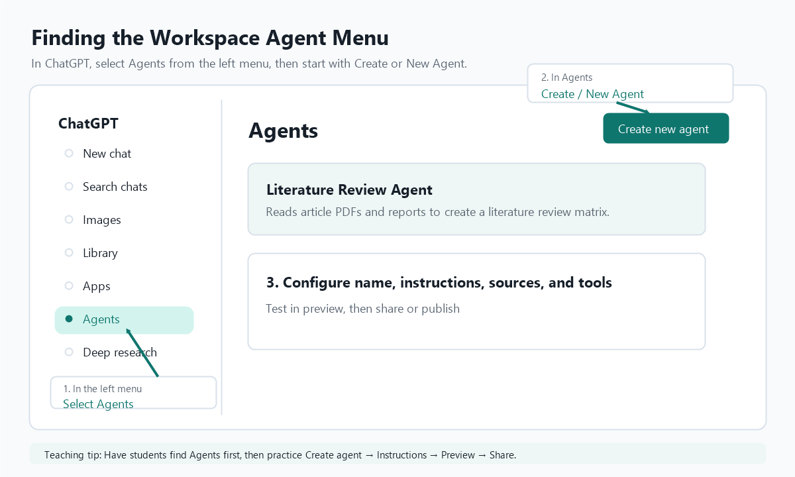
For a class demonstration, use this sequence: “ChatGPT left menu → Agents → Create new agent → enter name and description → write instructions → attach sources and tools → test in preview → share or publish.” The exact layout may differ by account and app version, but the essential path is to find Agents in the left menu and then enter the creation flow.
Workspace Agents are useful when multiple people repeatedly need the same AI role, such as a policy-report reviewer, literature-review assistant, complaint-response checker, or lecture-material production assistant.
A Skill is a reusable capability or workflow. A Workspace Agent is a worker that can combine instructions, sources, tools, files, Skills, and starter prompts for a specific role.
Name: Literature Review Agent
Description:
Reads public administration articles and reports, then creates literature review matrices, research-gap summaries, and candidate follow-up research questions.
Core instructions:
- Separate source-confirmed content from interpretation.
- Summarize research question, theory, data, method, main findings, limitations, and relevance to the user's project.
- Mark incomplete citation information as “needs verification.”
- Do not overgeneralize beyond what the article claims.
- End with research gaps and candidate follow-up questions.
Starter prompts:
1. Turn the three attached articles into a literature review matrix.
2. Identify gaps in the existing literature related to this research proposal.
3. Compare the theories and methods used in these articles.| Situation | Recommended Choice | Why |
|---|---|---|
| One-off question, brainstorming, quick draft | Regular ChatGPT conversation | Lowest setup cost and fastest start |
| Same output format is needed repeatedly | Skill | Reusable workflow, output format, and verification rules |
| A team repeatedly needs the same AI role with tools and sources | Workspace Agent | Combines role, instructions, sources, tools, Skills, and starter prompts |
| Actual file editing, command execution, tests, or deployment checks are needed | Codex or Codex Skill | Works inside the project folder and can verify changes |
| Recurring reminders or scheduled checks are needed | Tasks or a scheduled published Agent | Allows follow-ups to happen on a defined schedule |
Part 3
ChatGPT is optimized for conversation, explanation, drafting, reasoning, and broad assistance. Codex is optimized for working inside files and projects. It can inspect the local workspace, edit files, run commands, and verify the result. In short, ChatGPT is mainly a conversational assistant, while Codex is a work agent connected to a concrete project environment.
Both ChatGPT and Codex answer from context, but they differ in what they can reference and how they can act on it. ChatGPT usually works from the conversation, attachments, project sources, memory, and connected tools. Codex works from the actual project folder, repository files, terminal output, test results, Git changes, and approved tool results.
| Category | ChatGPT References | Codex References |
|---|---|---|
| Basic context | Current conversation, pasted text, uploaded files, project sources | Current workspace, repository files, command output, test results |
| Persistent context | Memory, project instructions, related project chats and files | AGENTS.md, .codex/config.toml, project structure, Git status |
| Access pattern | Reads user-provided or connected materials and reflects them in an answer | Opens files directly, edits them when asked, and verifies results through commands |
| Applying results | The user often copies, interprets, or applies the answer manually | Codex can modify files, run scripts, run tests, build, and assist deployment |
| Key caution | Claims not supported by sources may come from general knowledge or inference | Files outside the workspace, network access, and risky commands require permission and approval |
Codex can inspect a project structure, explain how files are connected, and identify where a change should be made.
It can modify HTML, CSS, JavaScript, Python, documents, spreadsheets, and configuration files.
It can run scripts, tests, build commands, and local servers, then report what happened.
Codex can be used through the Codex app, an IDE extension, or the command line. The best starting point is the app or IDE if the user wants visual interaction, and the CLI if the user prefers terminal-based workflows.
An Integrated Development Environment combines editing, file browsing, terminal access, debugging, and extensions in one workspace.
A Command Line Interface lets users run commands by typing text in a terminal. It is powerful for automation and repeated tasks.
# Example CLI installation pattern
npm install -g @openai/codex
codexExact installation steps may change, so users should check the current official OpenAI Codex documentation when installing.
Codex may ask for permission before actions that write outside the workspace, use the network, open GUI applications, install packages, or push to a remote repository. This permission model protects files and credentials while still allowing practical work.
| Command | Function |
|---|---|
/clear | Clears the current conversation context and starts fresh. |
/goal | Defines or checks a longer-running objective. |
/model | Changes the model or reasoning setting when available. |
/skills | Browses and selects available Skills for repeatable workflows. |
/help | Shows available commands and usage hints. |
Some Codex interfaces allow users to choose reasoning effort such as low, medium, or high. Lower reasoning is faster and suitable for simple edits. Higher reasoning is slower but better for complex debugging, planning, architectural decisions, and tasks with many constraints.
# ~/.codex/config.toml or project .codex/config.toml
model_reasoning_effort = "medium"
# Use deeper reasoning only in plan mode
plan_mode_reasoning_effort = "high"Part 4
This example uses Codex to fetch price index data from KOSIS, save it to an Excel file, and create a chart inside the workbook. The KOSIS API key is read from C:\Users\owner\AI Lecture\codex\kosis_api_key.txt, so the key is kept separate from the script.
Please create a Python script that reads the KOSIS API key from
C:\Users\owner\AI Lecture\codex\kosis_api_key.txt,
downloads consumer price index data, saves it as an Excel file,
and adds a line chart with dates on the horizontal axis.The important lesson is that Codex can combine data access, file creation, spreadsheet formatting, chart generation, and verification in a single workflow.
Collect data, summarize trends, create charts, and draft briefing notes.
Transform repeated report templates into semi-automated workflows.
Detect missing values, inconsistent region names, duplicate records, and unusual values.
Build simple pages that explain datasets and provide visual summaries.
Summarize agendas, prepare questions, and extract action items.
Create examples, exercises, slides, and practical demonstrations for staff training.
Codex output should be reviewed like the work of a capable assistant. Check whether the requested change was made, whether unrelated files were touched, whether tests or scripts passed, and whether any assumptions need correction.
AGENTS.mdStore repeated rules, test commands, and review criteria so they do not need to be restated.
Ask for small edits directly, but split large features into planning, implementation, verification, and review.
With appropriate permissions, Codex can work with GitHub, browsers, documents, spreadsheets, and other tools.